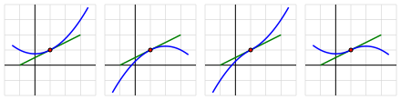

What is the formula for the general tangent line approximation to a differentiable function \(y = f(x)\) at the point \((a,f(a))\text{?}\)
What is the principle of local linearity and what is the local linearization of a differentiable function \(f\) at a point \((a,f(a))\text{?}\)
How does knowing just the tangent line approximation tell us information about the behavior of the original function itself near the point of approximation? How does knowing the second derivative’s value at this point provide us additional knowledge of the original function’s behavior?
Among all functions, linear functions are simplest. One of the powerful consequences of a function \(y = f(x)\) being differentiable at a point \((a,f(a))\) is that, up close, the function \(y = f(x)\) is locally linear and looks like its tangent line at that point. In certain circumstances, this allows us to approximate the original function \(f\) with a simpler function \(L\) that is linear: this can be advantageous when we have limited information about \(f\) or when \(f\) is computationally or algebraically complicated. We will explore all of these situations in what follows.
It is essential to recall that when \(f\) is differentiable at \(x = a\text{,}\) the value of \(f'(a)\) provides the slope of the tangent line to \(y = f(x)\) at the point \((a,f(a))\text{.}\) If we know both a point on the line and the slope of the line we can find the equation of the tangent line and write the equation in point-slope form 1 .
Preview Activity1.8.1.
Consider the function \(y=g(x) = -x^{2}+3x+2\text{.}\)
(a) Use the limit definition to compute a formula for \(g'(x)\text{.}\)
Apply the limit definition: \(\displaystyle g'(x) = \lim_{h\to 0}\Big[\)\(/h\Big]\)
Evaluate the limit: \(g'(x)=\)
(b) Determine the slope of the tangent line to \(y=g(x)\) at the value \(x=2\text{.}\)
slope =
(c) Compute \(g(2)\text{.}\)
\(g(2) =\)
(d) The equation for the tangent line to \(y=g(x)\) at the point \((2,g(2))\text{,}\) written in point-slope form, is
\(y -\)\(=\)\(\cdot\Big(x -\)\(\Big)\)
Fill in the blanks with the appropriate numbers.
(e) Both the function \(y=g(x)\) and its tangent line at the point \((2,g(2))\) are graphed below.
Which of the following statements are true? Select all that apply.
The functions are approximately equal on the interval \(0.5 \leq x \leq 1.0 \text{.}\)
The functions are approximately equal on the interval \(1.9 \leq x \leq 2.1 \text{.}\)
The slope of the line equals \(g'(0)\text{.}\)
The functions have the same \(y\)-intercept.
The slope of the line equals \(g'(2)\text{.}\)
The graphs intersect at the point \((2,4)\text{.}\)
None of the above are true.
Subsection1.8.1The tangent line
Given a function \(f\) that is differentiable at \(x = a\text{,}\) we know that we can determine the slope of the tangent line to \(y = f(x)\) at \((a,f(a))\) by computing \(f'(a)\text{.}\) The equation of the resulting tangent line is given in point-slope form by
\begin{equation*}
y - f(a) = f'(a)(x-a) \ \ \text{or} \ \ y = f'(a)(x-a) + f(a)\text{.}
\end{equation*}
Note well: there is a major difference between \(f(a)\) and \(f(x)\) in this context. The former is a constant that results from using the given fixed value of \(a\text{,}\) while the latter is the general expression for the rule that defines the function. The same is true for \(f'(a)\) and \(f'(x)\text{:}\) we must carefully distinguish between these expressions. Each time we find the tangent line, we need to evaluate the function and its derivative at a fixed \(a\)-value.
In Figure 1.8.1, we see the graph of a function \(f\) and its tangent line at the point \((a,f(a))\text{.}\) Notice how when we zoom in we see the local linearity of \(f\) more clearly highlighted. The function and its tangent line are nearly indistinguishable up close. Local linearity can also be seen dynamically in this applet 2 .
Figure1.8.1.A function \(y = f(x)\) and its tangent line at the point \((a,f(a))\text{:}\) at left, from a distance, and at right, up close. At right, we label the tangent line function by \(y = L(x)\) and observe that for \(x\) near \(a\text{,}\)\(f(x) \approx L(x)\text{.}\)
Subsection1.8.2The local linearization
A slight change in perspective and notation will enable us to be more precise in discussing how the tangent line approximates \(f\) near \(x = a\text{.}\) By solving for \(y\text{,}\) we can write the equation for the tangent line as
\begin{equation*}
y = f'(a)(x-a) + f(a)
\end{equation*}
This line is itself a function of \(x\text{.}\) Replacing the variable \(y\) with the expression \(L(x)\text{,}\) we call
the local linearization of \(f\) at the point \((a,f(a))\text{.}\) In this notation, \(L(x)\) is nothing more than a new name for the tangent line. As we saw above, for \(x\) close to \(a\text{,}\)\(f(x) \approx L(x)\text{.}\)
Example1.8.2.
Suppose that a function \(y = f(x)\) has its tangent line approximation given by \(L(x) = 3 - 2(x-1)\) at the point \((1,3)\text{,}\) but we do not know anything else about the function \(f\text{.}\) To estimate a value of \(f(x)\) for \(x\) near 1, such as \(f(1.2)\text{,}\) we can use the fact that \(f(1.2) \approx L(1.2)\) and hence
We emphasize that \(y = L(x)\) is simply a new name for the tangent line function. Using this new notation and our observation that \(L(x) \approx f(x)\) for \(x\) near \(a\text{,}\) it follows that we can write
Suppose it is known that for a given differentiable function \(y = g(x)\text{,}\) its local linearization at the point where \(a = -1\) is given by \(L(x) = -2 + 3(x+1)\text{.}\)
Compute the values of \(L(-1)\) and \(L'(-1)\text{.}\)
What must be the values of \(g(-1)\) and \(g'(-1)\text{?}\) Why?
Do you expect the value of \(g(-1.03)\) to be greater than or less than the value of \(g(-1)\text{?}\) Why?
Use the local linearization to estimate the value of \(g(-1.03)\text{.}\)
Suppose that you also know that \(g''(-1) = 2\text{.}\) What does this tell you about the graph of \(y = g(x)\) at \(a = -1\text{?}\)
For \(x\) near \(-1\text{,}\) sketch the graph of the local linearization \(y = L(x)\) as well as a possible graph of \(y = g(x)\) on the axes provided in Figure 1.8.3.
Figure1.8.3.Axes for plotting \(y = L(x)\) and \(y = g(x)\text{.}\)
From Activity 1.8.2, we see that the local linearization \(y = L(x)\) is a linear function that shares two important values with the function \(y = f(x)\) that it is derived from. In particular,
because \(L(x) = f(a) + f'(a)(x-a)\text{,}\) it follows that \(L(a) = f(a)\text{;}\) and
because \(L\) is a linear function, its derivative is its slope.
Hence, \(L'(x) = f'(a)\) for every value of \(x\text{,}\) and specifically \(L'(a) = f'(a)\text{.}\) Therefore, we see that \(L\) is a linear function that has both the same value and the same slope as the function \(f\) at the point \((a,f(a))\text{.}\)
Thus, if we know the linear approximation \(y = L(x)\) for a function, we know the original function’s value and its slope at the point of tangency. What remains unknown, however, is the shape of the function \(f\) at the point of tangency. There are essentially four possibilities, as shown in Figure 1.8.4.

Figure1.8.4.Four possible graphs for a nonlinear differentiable function and how it can be situated relative to its tangent line at a point.
These possible shapes result from the fact that there are three options for the value of the second derivative: either \(f''(a) \lt 0\text{,}\)\(f''(a) = 0\text{,}\) or \(f''(a) \gt 0\text{.}\)
If \(f''(a) \gt 0\text{,}\) then we know the graph of \(f\) is concave up, and we see the first possibility on the left, where the tangent line lies entirely below the curve.
If \(f''(a) \lt 0\text{,}\) then \(f\) is concave down and the tangent line lies above the curve, as shown in the second figure.
If \(f''(a) = 0\) and \(f''\) changes sign at \(x = a\text{,}\) the concavity of the graph will change, and we will see either the third or fourth figure. 3 .
A fifth option (which is not very interesting) can occur if the function \(f\) itself is linear, so that \(f(x) = L(x)\) for all values of \(x\text{.}\)
The plots in Figure 1.8.4 highlight yet another important thing that we can learn from the concavity of the graph near the point of tangency: whether the tangent line lies above or below the curve itself. This is key because it tells us whether or not the tangent line approximation’s values will be too large or too small in comparison to the true value of \(f\text{.}\) For instance, in the first situation in the leftmost plot in Figure 1.8.4 where \(f''(a) > 0\text{,}\) because the tangent line falls below the curve, we know that \(L(x) \le f(x)\) for all values of \(x\) near \(a\text{.}\)
Activity1.8.3.
This activity concerns a function \(f(x)\) about which the following information is known:
\(f\) is a differentiable function defined at every real number \(x\)
Figure1.8.5.At center, a graph of \(y = f'(x)\text{;}\) at left, axes for plotting \(y = f(x)\text{;}\) at right, axes for plotting \(y = f''(x)\text{.}\)
Your task is to determine as much information as possible about \(f\) (especially near the value \(a = 2\)) by responding to the questions below.
Find a formula for the tangent line approximation, \(L(x)\text{,}\) to \(f\) at the point \((2,-1)\text{.}\)
Use the tangent line approximation to estimate the value of \(f(2.07)\text{.}\) Show your work carefully and clearly.
Sketch a graph of \(y = f''(x)\) on the righthand grid in Figure 1.8.5; label it appropriately.
Is the slope of the tangent line to \(y = f(x)\) increasing, decreasing, or neither when \(x = 2\text{?}\) Explain.
Sketch a possible graph of \(y = f(x)\) near \(x = 2\) on the lefthand grid in Figure 1.8.5. Include a sketch of \(y=L(x)\) (found in part (a)). Explain how you know the graph of \(y = f(x)\) looks like you have drawn it.
Does your estimate in (b) over- or under-estimate the true value of \(f(2.07)\text{?}\) Why?
The idea that a differentiable function looks linear and can be well-approximated by a linear function is an important one that finds wide application in calculus. For example, by approximating a function with its local linearization, it is possible to develop an effective algorithm to estimate the zeroes of a function. Local linearity also helps us to make further sense of certain challenging limits. For instance, we have seen that the limit
is indeterminate, because both its numerator and denominator tend to 0. While there is no algebra that we can do to simplify \(\frac{\sin(x)}{x}\text{,}\) it is straightforward to show that the linearization of \(f(x) = \sin(x)\) at the point \((0,0)\) is given by \(L(x) = x\text{.}\) Hence, for values of \(x\) near 0, \(\sin(x) \approx x\text{,}\) and therefore
The tangent line to a differentiable function \(y = f(x)\) at the point \((a,f(a))\) is given in point-slope form by the equation
\begin{equation*}
y - f(a) = f'(a)(x-a)\text{.}
\end{equation*}
The principle of local linearity tells us that if we zoom in on a point where a function \(y = f(x)\) is differentiable, the function will be indistinguishable from its tangent line. That is, a differentiable function looks linear when viewed up close. We rename the tangent line to be the function \(y = L(x)\text{,}\) where \(L(x) = f(a) + f'(a)(x-a)\text{.}\) Thus, \(f(x) \approx L(x)\) for all \(x\) near \(x = a\text{.}\)
If we know the tangent line approximation \(L(x) = f(a) + f'(a)(x-a)\) to a function \(y=f(x)\text{,}\) then because \(L(a) = f(a)\) and \(L'(a) = f'(a)\text{,}\) we also know the values of both the function and its derivative at the point where \(x = a\text{.}\) In other words, the linear approximation tells us the height and slope of the original function. If, in addition, we know the value of \(f''(a)\text{,}\) we then know whether the tangent line lies above or below the graph of \(y = f(x)\text{,}\) depending on the concavity of \(f\text{.}\)
Exercises1.8.4Exercises
1.
Suppose that \(f(x)\) is a function with \(f(130) = 85\) and \(f'(130) = 3\text{.}\) Estimate \(f(130.5)\text{.}\)
\(f(130.5) \approx\)
2.
Use linear approximation, i.e. the tangent line, to approximate \(\frac 1{0.503}\) as follows: Let \(f(x) = \frac 1x\) and find the equation of the tangent line to \(f(x)\) at a "nice" point near \(0.503\text{.}\) Then use this to approximate \(\frac 1{0.503}\text{.}\)
\(\frac 1{0.503} \approx\)
3.
Use linear approximation, i.e. the tangent line, to approximate \(6.97^2\) as follows:
Let \(f(x) = x ^2\text{.}\) The equation of the tangent line to \(f(x)\) at \(x = 7\) can be written in the form \(y = mx+b\) where:
\(m\) = and
\(b\) =
Using this, we find our approximation for \(6.97 ^2\) is
4.
Use linear approximation to approximate \(\sqrt {81.4}\) as follows.
Let \(f(x) = \sqrt x\text{.}\) The equation of the tangent line to \(f(x)\) at \(x = 81\) can be written in the form \(y = mx+b\text{.}\) Compute \(m\) and \(b\text{.}\)
\(m=\)
\(b=\)
Using this find the approximation for \(\sqrt {81.4}\text{.}\)
Answer:
5.
The figure below shows \(f(x)\) and its local linearization at \(x=a\text{,}\)\(y = 4 x - 5\text{.}\) (The local linearization is shown in blue.)
What is the value of \(a\text{?}\)
\(a =\)
What is the value of \(f(a)\text{?}\)
\(f(a) =\)
Use the linearization to approximate the value of \(f(1.3)\text{.}\)
\(f(1.3) =\)
Is the approximation an under- or overestimate?
(Enter under or over.)
6.
Given that \(f(-6.2) = -2.7\) and \(f(-6) = -6.4\text{,}\) approximate \(f'(-6.2)\text{.}\)
\(f'(-6.2) \approx\)
7.
A certain function \(y=p(x)\) has its local linearization at \(a = 3\) given by \(L(x) = -2x + 5\text{.}\)
What are the values of \(p(3)\) and \(p'(3)\text{?}\) Why?
Estimate the value of \(p(2.79)\text{.}\)
Suppose that \(p''(3) = 0\) and you know that \(p''(x) \lt 0\) for \(x \lt 3\text{.}\) Is your estimate in (b) too large or too small?
Suppose that \(p''(x) \gt 0\) for \(x \gt 3\text{.}\) Use this fact and the additional information above to sketch an accurate graph of \(y = p(x)\) near \(x = 3\text{.}\) Include a sketch of \(y = L(x)\) in your work.
8.
A potato is placed in an oven, and the potato’s temperature \(F\) (in degrees Fahrenheit) at various points in time is taken and recorded in the following table. Time \(t\) is measured in minutes.
Table1.8.6.Temperature data for the potato.
\(t\)
\(F(t)\)
\(0\)
\(70\)
\(15\)
\(180.5\)
\(30\)
\(251\)
\(45\)
\(296\)
\(60\)
\(324.5\)
\(75\)
\(342.8\)
\(90\)
\(354.5\)
Use a central difference to estimate \(F'(60)\text{.}\) Use this estimate as needed in subsequent questions.
Find the local linearization \(y = L(t)\) to the function \(y = F(t)\) at the point where \(a = 60\text{.}\)
Determine an estimate for \(F(63)\) by employing the local linearization.
Do you think your estimate in (c) is too large or too small? Why?
9.
An object moving along a straight line path has a differentiable position function \(y = s(t)\text{;}\)\(s(t)\) measures the object’s position relative to the origin at time \(t\text{.}\) It is known that at time \(t = 9\) seconds, the object’s position is \(s(9) = 4\) feet (i.e., 4 feet to the right of the origin). Furthermore, the object’s instantaneous velocity at \(t = 9\) is \(-1.2\) feet per second, and its acceleration at the same instant is \(0.08\) feet per second per second.
Use local linearity to estimate the position of the object at \(t = 9.34\text{.}\)
Is your estimate likely too large or too small? Why?
In everyday language, describe the behavior of the moving object at \(t = 9\text{.}\) Is it moving toward the origin or away from it? Is its velocity increasing or decreasing?
10.
For a certain function \(f\text{,}\) its derivative is known to be \(f'(x) = (x-1)e^{-x^2}\text{.}\) Note that you do not know a formula for \(y = f(x)\text{.}\)
At what \(x\)-value(s) is \(f'(x) = 0\text{?}\) Justify your answer algebraically, but include a graph of \(f'\) to support your conclusion.
Reasoning graphically, for what intervals of \(x\)-values is \(f''(x) \gt 0\text{?}\) What does this tell you about the behavior of the original function \(f\text{?}\) Explain.
Assuming that \(f(2) = -3\text{,}\) estimate the value of \(f(1.88)\) by finding and using the tangent line approximation to \(f\) at \(x=2\text{.}\) Is your estimate larger or smaller than the true value of \(f(1.88)\text{?}\) Justify your answer.
Recall that a line with slope \(m\) that passes through \((x_0,y_0)\) has equation \(y - y_0 = m(x - x_0)\text{,}\) and this is the point-slope form of the equation.
gvsu.edu/s/6J
It is possible that \(f''(a) = 0\) but \(f''\) does not change sign at \(x = a\text{,}\) in which case the graph will look like one of the first two options.